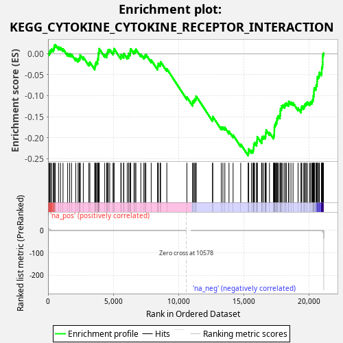
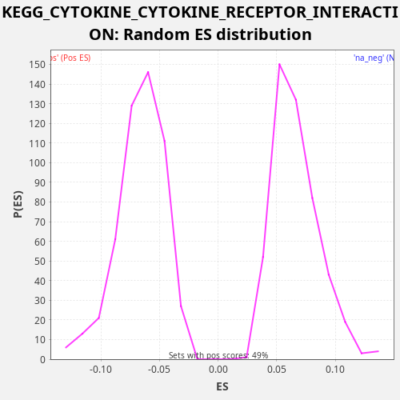

| Dataset | CCLE |
| Phenotype | NoPhenotypeAvailable |
| Upregulated in class | na_neg |
| GeneSet | KEGG_CYTOKINE_CYTOKINE_RECEPTOR_INTERACTION |
| Enrichment Score (ES) | -0.24284138 |
| Normalized Enrichment Score (NES) | -3.6828272 |
| Nominal p-value | 0.0 |
| FDR q-value | 0.0 |
| FWER p-Value | 0.0 |

| SYMBOL | RANK IN GENE LIST | RANK METRIC SCORE | RUNNING ES | CORE ENRICHMENT | |
|---|---|---|---|---|---|
| 1 | AMH | 89 | 3.888 | 0.0017 | No |
| 2 | KIT | 136 | 2.450 | 0.0055 | No |
| 3 | PDGFRB | 197 | 1.304 | 0.0087 | No |
| 4 | IL21R | 279 | 0.541 | 0.0108 | No |
| 5 | CSF2RA | 405 | 0.215 | 0.0108 | No |
| 6 | CSF1R | 462 | 0.142 | 0.0141 | No |
| 7 | KDR | 479 | 0.125 | 0.0193 | No |
| 8 | IL9R | 560 | 0.074 | 0.0215 | No |
| 9 | CSF1 | 805 | 0.024 | 0.0159 | No |
| 10 | IL1R2 | 955 | 0.014 | 0.0147 | No |
| 11 | EGF | 1149 | 0.007 | 0.0115 | No |
| 12 | TNFRSF11A | 1505 | 0.003 | 0.0006 | No |
| 13 | TNFRSF10C | 1657 | 0.002 | -0.0006 | No |
| 14 | TNFSF13 | 1799 | 0.001 | -0.0014 | No |
| 15 | CXCR6 | 2126 | 0.001 | -0.0110 | No |
| 16 | CXCR4 | 2305 | 0.000 | -0.0135 | No |
| 17 | IFNAR2 | 2381 | 0.000 | -0.0111 | No |
| 18 | HGF | 2448 | 0.000 | -0.0082 | No |
| 19 | INHBE | 2467 | 0.000 | -0.0031 | No |
| 20 | CXCL14 | 2703 | 0.000 | -0.0083 | No |
| 21 | IL3RA | 3131 | 0.000 | -0.0227 | No |
| 22 | ACVR2A | 3207 | 0.000 | -0.0203 | No |
| 23 | PDGFRA | 3577 | 0.000 | -0.0319 | No |
| 24 | GHR | 3617 | 0.000 | -0.0278 | No |
| 25 | CCL26 | 3644 | 0.000 | -0.0230 | No |
| 26 | EDA2R | 3692 | 0.000 | -0.0193 | No |
| 27 | TNFSF18 | 3797 | 0.000 | -0.0183 | No |
| 28 | FLT1 | 3799 | 0.000 | -0.0123 | No |
| 29 | TNFRSF19 | 3845 | 0.000 | -0.0085 | No |
| 30 | IL2RG | 3856 | 0.000 | -0.0030 | No |
| 31 | IL1R1 | 3878 | 0.000 | 0.0020 | No |
| 32 | CCR1 | 3913 | 0.000 | 0.0064 | No |
| 33 | IL10RA | 3923 | 0.000 | 0.0119 | No |
| 34 | CXCL16 | 4344 | 0.000 | -0.0021 | No |
| 35 | CSF2RB | 4495 | 0.000 | -0.0033 | No |
| 36 | FLT4 | 4519 | 0.000 | 0.0016 | No |
| 37 | TNFSF4 | 4573 | 0.000 | 0.0051 | No |
| 38 | LTB | 4615 | 0.000 | 0.0091 | No |
| 39 | IL6 | 4727 | 0.000 | 0.0098 | No |
| 40 | TNFSF13B | 4981 | 0.000 | 0.0037 | No |
| 41 | CXCR2 | 5040 | 0.000 | 0.0069 | No |
| 42 | LIF | 5059 | 0.000 | 0.0121 | No |
| 43 | CD27 | 5579 | 0.000 | -0.0067 | No |
| 44 | IL10RB | 5607 | 0.000 | -0.0020 | No |
| 45 | IFNAR1 | 5788 | 0.000 | -0.0046 | No |
| 46 | CCL28 | 5809 | 0.000 | 0.0004 | No |
| 47 | TNFRSF21 | 6069 | 0.000 | -0.0060 | No |
| 48 | VEGFD | 6172 | 0.000 | -0.0048 | No |
| 49 | CSF3R | 6185 | 0.000 | 0.0006 | No |
| 50 | INHBC | 6296 | 0.000 | 0.0013 | No |
| 51 | TNFRSF12A | 6304 | 0.000 | 0.0070 | No |
| 52 | TNFRSF9 | 6336 | 0.000 | 0.0115 | No |
| 53 | XCL1 | 6585 | 0.000 | 0.0056 | No |
| 54 | IL15 | 6673 | 0.000 | 0.0075 | No |
| 55 | IL15RA | 6732 | 0.000 | 0.0107 | No |
| 56 | IFNGR1 | 7111 | 0.000 | -0.0014 | No |
| 57 | VEGFB | 7342 | 0.000 | -0.0063 | No |
| 58 | BMPR2 | 7422 | 0.000 | -0.0041 | No |
| 59 | IL7 | 7496 | 0.000 | -0.0016 | No |
| 60 | IL6ST | 7904 | 0.000 | -0.0151 | No |
| 61 | PLEKHO2 | 8397 | 0.000 | -0.0325 | No |
| 62 | IL11 | 8414 | 0.000 | -0.0273 | No |
| 63 | IL13RA1 | 8453 | 0.000 | -0.0231 | No |
| 64 | RELT | 8592 | 0.000 | -0.0237 | No |
| 65 | TGFB3 | 8627 | 0.000 | -0.0194 | No |
| 66 | LEPR | 9102 | 0.000 | -0.0360 | No |
| 67 | CCR4 | 10640 | 0.000 | -0.1034 | No |
| 68 | MET | 11083 | -0.000 | -0.1185 | No |
| 69 | PRLR | 11087 | -0.000 | -0.1126 | No |
| 70 | PDGFA | 11186 | -0.000 | -0.1113 | No |
| 71 | LTBR | 11247 | -0.000 | -0.1082 | No |
| 72 | TNFRSF1A | 11317 | -0.000 | -0.1055 | No |
| 73 | ACVR1B | 11351 | -0.000 | -0.1011 | No |
| 74 | CNTF | 12602 | -0.000 | -0.1547 | No |
| 75 | TGFBR2 | 12623 | -0.000 | -0.1497 | No |
| 76 | TGFBR1 | 13277 | -0.000 | -0.1749 | No |
| 77 | IL20RB | 13400 | -0.000 | -0.1747 | No |
| 78 | TNFSF14 | 13548 | -0.000 | -0.1757 | No |
| 79 | TNFRSF10B | 13866 | -0.000 | -0.1849 | No |
| 80 | LIFR | 14180 | -0.000 | -0.1938 | No |
| 81 | TNFRSF18 | 14764 | -0.000 | -0.2156 | No |
| 82 | TGFB2 | 15335 | -0.000 | -0.2369 | Yes |
| 83 | OSMR | 15364 | -0.000 | -0.2322 | Yes |
| 84 | IL20RA | 15376 | -0.000 | -0.2267 | Yes |
| 85 | KITLG | 15584 | -0.000 | -0.2306 | Yes |
| 86 | FAS | 15702 | -0.000 | -0.2302 | Yes |
| 87 | IL11RA | 15726 | -0.000 | -0.2253 | Yes |
| 88 | TNFRSF10D | 15762 | -0.000 | -0.2210 | Yes |
| 89 | ACVR2B | 15767 | -0.000 | -0.2152 | Yes |
| 90 | TNFRSF10A | 15823 | -0.000 | -0.2119 | Yes |
| 91 | IFNGR2 | 15978 | -0.000 | -0.2132 | Yes |
| 92 | TGFB1 | 15996 | -0.000 | -0.2080 | Yes |
| 93 | IL23A | 16025 | -0.000 | -0.2034 | Yes |
| 94 | TNFRSF14 | 16032 | -0.000 | -0.1977 | Yes |
| 95 | IL6R | 16365 | -0.000 | -0.2075 | Yes |
| 96 | EPOR | 16382 | -0.000 | -0.2023 | Yes |
| 97 | IL12RB1 | 16404 | -0.000 | -0.1973 | Yes |
| 98 | VEGFA | 16521 | -0.000 | -0.1969 | Yes |
| 99 | CLCF1 | 16645 | -0.000 | -0.1968 | Yes |
| 100 | TSLP | 16671 | -0.000 | -0.1920 | Yes |
| 101 | IL18 | 16691 | -0.000 | -0.1869 | Yes |
| 102 | INHBA | 16712 | -0.000 | -0.1818 | Yes |
| 103 | CCR10 | 16967 | -0.000 | -0.1880 | Yes |
| 104 | TNFRSF11B | 17272 | -0.000 | -0.1965 | Yes |
| 105 | IL7R | 17317 | -0.000 | -0.1926 | Yes |
| 106 | CD40 | 17336 | -0.000 | -0.1875 | Yes |
| 107 | CXCL12 | 17339 | -0.000 | -0.1816 | Yes |
| 108 | IL24 | 17346 | -0.000 | -0.1759 | Yes |
| 109 | IFNLR1 | 17358 | -0.000 | -0.1704 | Yes |
| 110 | FLT3LG | 17415 | -0.000 | -0.1671 | Yes |
| 111 | IL18R1 | 17460 | -0.000 | -0.1632 | Yes |
| 112 | CCR3 | 17528 | -0.000 | -0.1604 | Yes |
| 113 | IL22RA1 | 17543 | -0.000 | -0.1551 | Yes |
| 114 | TNFSF12 | 17595 | -0.000 | -0.1515 | Yes |
| 115 | CCL2 | 17648 | -0.000 | -0.1480 | Yes |
| 116 | TNFRSF8 | 17772 | -0.000 | -0.1479 | Yes |
| 117 | BMP7 | 17788 | -0.000 | -0.1427 | Yes |
| 118 | LTA | 17795 | -0.000 | -0.1369 | Yes |
| 119 | TNFSF9 | 17812 | -0.000 | -0.1317 | Yes |
| 120 | BMP2 | 17877 | -0.000 | -0.1288 | Yes |
| 121 | CCL27 | 17902 | -0.000 | -0.1239 | Yes |
| 122 | PDGFC | 17999 | -0.000 | -0.1225 | Yes |
| 123 | TNFRSF25 | 18135 | -0.000 | -0.1230 | Yes |
| 124 | IL4R | 18178 | -0.000 | -0.1190 | Yes |
| 125 | ACVR1 | 18270 | -0.000 | -0.1174 | Yes |
| 126 | CTF1 | 18430 | -0.000 | -0.1190 | Yes |
| 127 | IL12A | 18447 | -0.000 | -0.1137 | Yes |
| 128 | IL17RA | 18612 | -0.000 | -0.1156 | Yes |
| 129 | TNFRSF13C | 18773 | -0.000 | -0.1172 | Yes |
| 130 | VEGFC | 19158 | -0.000 | -0.1296 | Yes |
| 131 | IL1RAP | 19386 | -0.001 | -0.1344 | Yes |
| 132 | EGFR | 19400 | -0.001 | -0.1290 | Yes |
| 133 | BMPR1A | 19444 | -0.001 | -0.1251 | Yes |
| 134 | IL17RB | 19594 | -0.001 | -0.1262 | Yes |
| 135 | PDGFB | 19651 | -0.002 | -0.1229 | Yes |
| 136 | IL2RB | 19705 | -0.002 | -0.1194 | Yes |
| 137 | INHBB | 19779 | -0.002 | -0.1169 | Yes |
| 138 | CCL22 | 19874 | -0.003 | -0.1154 | Yes |
| 139 | TNF | 20038 | -0.005 | -0.1172 | Yes |
| 140 | CCR7 | 20116 | -0.007 | -0.1149 | Yes |
| 141 | CXCL11 | 20218 | -0.010 | -0.1137 | Yes |
| 142 | CD70 | 20263 | -0.012 | -0.1099 | Yes |
| 143 | CCL20 | 20320 | -0.015 | -0.1065 | Yes |
| 144 | TNFSF10 | 20327 | -0.015 | -0.1008 | Yes |
| 145 | CXCL3 | 20361 | -0.018 | -0.0964 | Yes |
| 146 | CXCL10 | 20374 | -0.020 | -0.0910 | Yes |
| 147 | ACVRL1 | 20381 | -0.020 | -0.0853 | Yes |
| 148 | IFNE | 20421 | -0.024 | -0.0812 | Yes |
| 149 | TNFSF15 | 20530 | -0.043 | -0.0803 | Yes |
| 150 | EDAR | 20547 | -0.047 | -0.0751 | Yes |
| 151 | TNFRSF6B | 20603 | -0.066 | -0.0718 | Yes |
| 152 | CSF2 | 20611 | -0.070 | -0.0661 | Yes |
| 153 | IL12RB2 | 20624 | -0.076 | -0.0607 | Yes |
| 154 | TPO | 20642 | -0.083 | -0.0555 | Yes |
| 155 | IL1A | 20719 | -0.133 | -0.0532 | Yes |
| 156 | EDA | 20772 | -0.197 | -0.0496 | Yes |
| 157 | TNFRSF1B | 20795 | -0.239 | -0.0447 | Yes |
| 158 | CXCL6 | 20947 | -1.275 | -0.0459 | Yes |
| 159 | CXCL5 | 20968 | -1.610 | -0.0409 | Yes |
| 160 | CXCL2 | 20971 | -1.651 | -0.0350 | Yes |
| 161 | NGFR | 21004 | -2.602 | -0.0305 | Yes |
| 162 | CXCL8 | 21031 | -3.850 | -0.0258 | Yes |
| 163 | CX3CL1 | 21039 | -4.280 | -0.0201 | Yes |
| 164 | CSF3 | 21044 | -4.458 | -0.0143 | Yes |
| 165 | BMPR1B | 21045 | -4.460 | -0.0083 | Yes |
| 166 | CXCL1 | 21058 | -5.436 | -0.0029 | Yes |
| 167 | IL1B | 21103 | -13.005 | 0.0010 | Yes |

{kind=link}
{kind=link}